collection
|

-カバクンリョコウキ3-秋の奈良へトリップ！編（2008）-秋の紅葉を見に、カバ君と奈良へ行ってみました。 
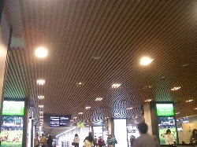 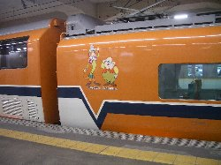 近鉄の駅です。 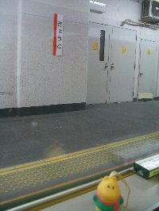 近鉄特急に乗るのですが、実は生まれて初めてです。 * * * * *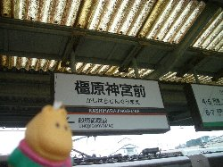 橿原神宮前に到着しました。雨が降ってきました。 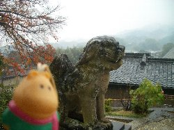 明日香村にある橘寺にやってきました。狛犬の前で記念撮影。 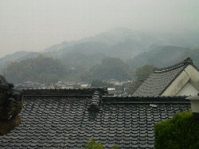 山が霧がかっていて、なんとも神秘的です。 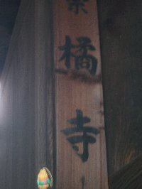 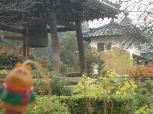 橘寺のお庭です。かば君はブレていますが、きっと雨のせいです（苦笑） 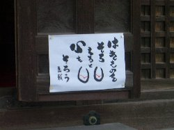 かわいらしかったので、記念に撮影。 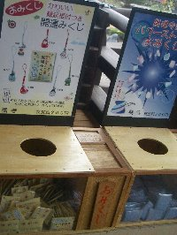 おみくじを発見。根付つき、パワーストーン付きです。 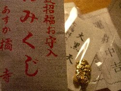 開運招福お守入おみくじ、と言うものです。 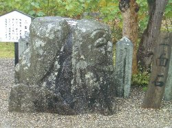 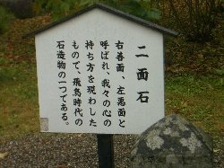 二面石。 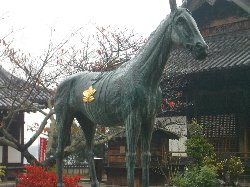 黒の駒。聖徳太子の愛馬で、達磨大師の化身だそうです。 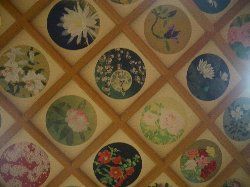 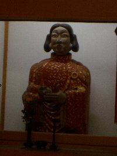 往生院の華の天井画 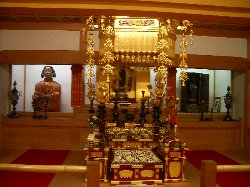 往生院は阿弥陀三尊を本尊としています。 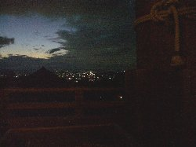 ゆっくり見て移動していたら、すっかり夜です。 -秋の奈良へトリップ！編つづく- Copyright(c) 2008 なないろまーぶる All rights reserved |